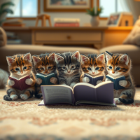
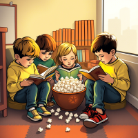

Lectura en los niños
La lectura es fundamental en el desarrollo de los niños, ya que no solo amplía su vocabulario y mejora sus habilidades lingüísticas,
sino que también estimula su imaginación y creatividad. A través de los libros, los pequeños pueden explorar nuevos mundos, comprender diversas emociones y desarrollar empatía al identificarse con distintos personajes. Además,
fomenta la concentración, el pensamiento crítico y el hábito de aprendizaje continuo, lo que será esencial para su éxito académico y
personal a lo largo de su vida.
-
Retentiva Etiam
-

Enseñanza Magna
-

Aprendizaje Tempus
1. Desarrollo del lenguaje y habilidades comunicativas:
La lectura en los niños es crucial para enriquecer su vocabulario y mejorar sus habilidades lingüísticas. A medida que exploran diferentes textos, aprenden nuevas palabras, estructuras gramaticales y formas de expresión que les permiten comunicarse de manera más efectiva. Este beneficio es esencial porque una buena base de lenguaje no solo facilita el aprendizaje escolar,
sino que también les ayuda a expresar sus pensamientos y emociones con claridad, lo que mejora sus relaciones sociales
Importancia de las Fábulas
Para los niños, las fábulas son una herramienta pedagógica invaluable porque presentan lecciones de vida de manera sencilla y entretenida.
Al estar protagonizadas por animales u objetos personificados, capturan rápidamente la atención de los pequeños, quienes pueden identificarse fácilmente con los personajes.
Además, las fábulas ayudan a los niños a comprender conceptos abstractos como la honestidad, la responsabilidad, el trabajo en equipo y la justicia a través de ejemplos claros y accesibles.
La moraleja al final de cada historia les permite reflexionar sobre sus propias acciones y decisiones, fomentando así un pensamiento crítico temprano. Por ejemplo,
la fábula de "La tortuga y la liebre" enseña el valor del esfuerzo constante frente a la arrogancia.